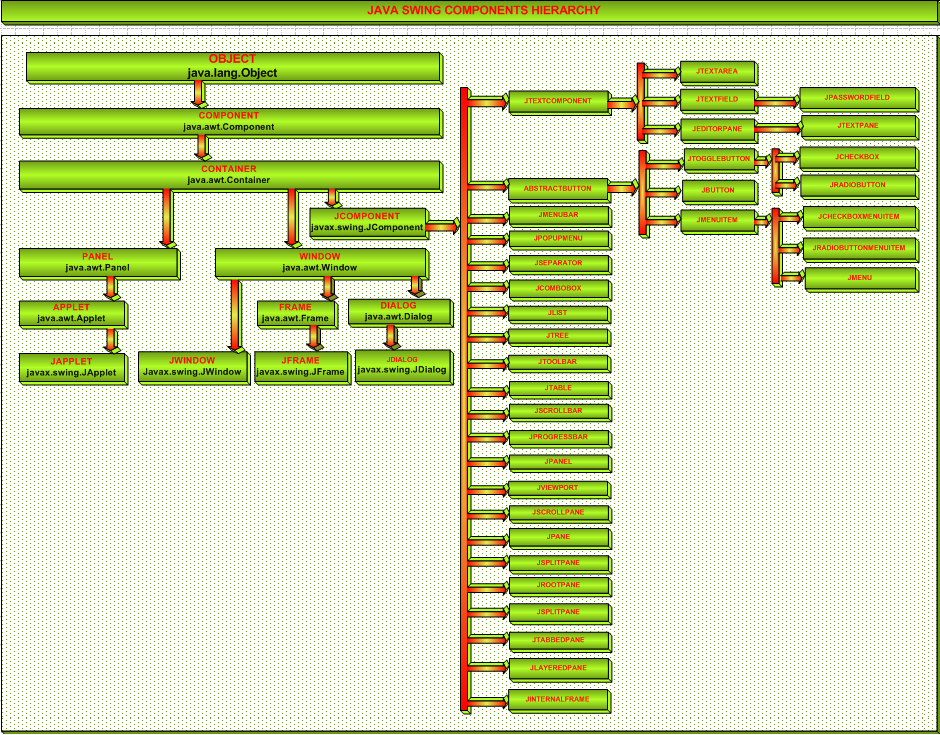
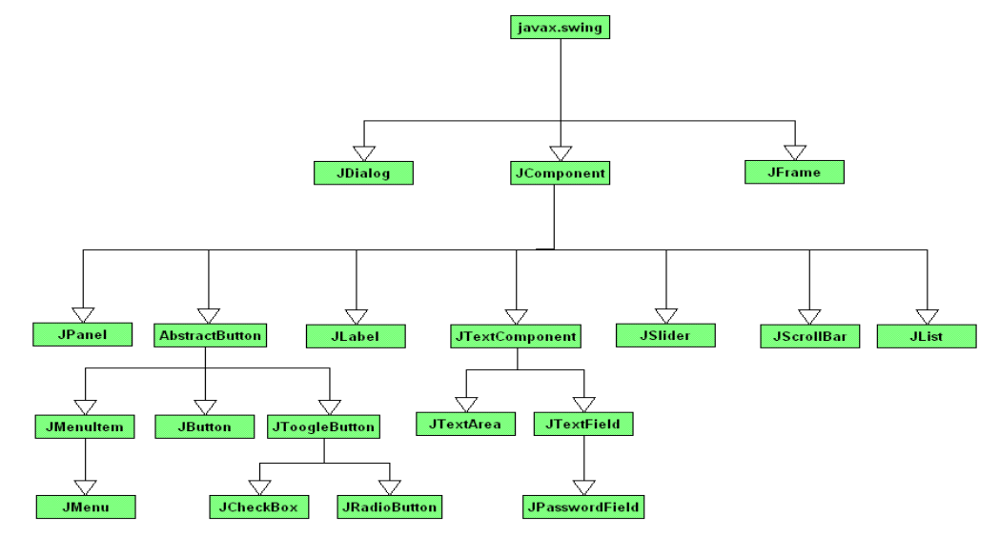
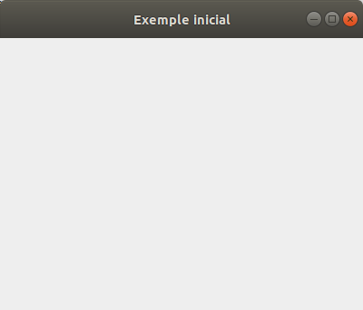

2.- Classes bàsiques de swing
Veja'm alguna imatge on es quede reflectida la jerarquia de classes de Swing.
En aquesta primera imatge més completa podem veure com Swing depèn de AWT:

Es poden diferenciar fàcilment les classes de AWT i de Swing, perquè aquestes últimes sempre comencen per J, mentre que les de AWT no.
En aquesta segona imatge veurem les classes que més ens interessen de forma resumida, però també incompleta.

Podem comprovar que tres són les classes principals:
- JFrame: permet crear una finestra que serà l'aplicació principal.
- JDialog: permet crear finestres de diàleg, de les que no es poden redimensionar, a partir de l'aplicació principal.
- JComponent: tots els components de Swing deriven d'aquesta classe
Anem a veure el procés de crear una finestra on residirà la nostra aplicació. No es pot definir en el programa principal (el què conté main). Des d'aquest programa normalment l'únic que farem serà cridar, activar la finestra (JFrame), i ací és on residirà realment el programa. Els passos seran aquestos:
- Des del programa principal (el del main) definim un objecte de la classe que serà la finestra.
- També cridarem a un mètode de la finestra que servirà per a iniciar.
- La classe que representa la finestra haurà de extrendre JFrame (extends JFrame).
- Haurà de tenir un mètode d'iniciació (per exemple iniciar) que serà el que cridarem des del programa principal. Com a mínim haurà de fer setVisible(true), per a poder fer -la visible. setVisible() és un mètode del JFrame, per tant podem posar-lo directament (o this.setVisible() ). I també seria molt recomanable donar-li una grandària determinada, ja que sinó serà de 0x0. Ho farem amb el mètode setSize(x,y). Ho podem fer abans de setVisible o després, però quasi que sembla més lògic posar-lo abans. També hem posat el mètode setDefaultCloseOperation donant-li el valor per a que tanque el programa quan es tanca la finestra (sinó, tancaríem la finestra, però el programa continuaria en marxa)
A continuació mostrem aquest esquelet que permet visualitzar una finestra. Observeu que en el programa principal (el main) únicament creem un objecte de tipus finestra, i el fem visible. S'ha de fer amb EventQueue.invokeLater per a llançar-lo en un segon fil. Aquest main no el modificarem en tots els exemples. La classe Finestra, evidentment sí.
Senzillament creem una finestra que tanque el programa quan es tanque la finestra, amb un determinat títol i una determinada grandària. Copieu el següent codi en el fitxer Exemple_Inicial.kt
import javax.swing.*
import java.awt.*
class Finestra : JFrame() {
init {
defaultCloseOperation = JFrame.EXIT_ON_CLOSE
setTitle("Exemple inicial")
setSize(400, 300)
}
}
fun main(args: Array<String>) {
EventQueue.invokeLater {
Finestra().isVisible = true
}
}Aquest seria el resultat.

Llicenciat sota la Llicència Creative Commons Reconeixement NoComercial SenseObraDerivada 2.5